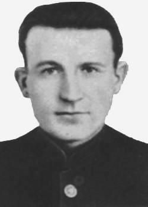

Фёдор Андреевич Крылович (23.03.1916 - 07.11.1959)
«Диверсия Крыловича» стала одной из крупнейших диверсий всей Второй мировой войны.
В июле 1943 года от руководства местного партизанского отряда он получил задание взорвать эшелон с горючим на ст. Осиповичи. Чтобы получить доступ к эшелону, прибывавшему на станцию ночью, подпольщик повредил электропроводку входного светофора, а когда его вызвали для ремонта светофора, установил две магнитные мины на цистернах в начале и конце состава.
Герой-подпольщик сумел подорвать целый эшелон с горючим, стоящий в вагонном парке станции Осиповичи, что повлекло за собой цепь взрывов и грандиозный пожар.
В результате взрыва и возникшего пожара уничтожены эшелон с горюче-смазочными материалами, два эшелона с боеприпасами, эшелон с танками «тигр» и бронемашинами, подвижной состав и большинство охраны станции. За успешное проведение этой операции награждён орденом Ленина.
Об успешно проведенной в Осиповичах операции стало известно не только в Москве, но и в Берлине. Правда, поначалу фашисты приняли случившееся за действия советской авиации.
Память:
Имя героя-подпольщика Ф. Крыловича присвоено одной из улиц Минска и улице в Осиповичах.
Установлен памятник на станции Осиповичи.
Фёдор Андреевич Крылович

На главную